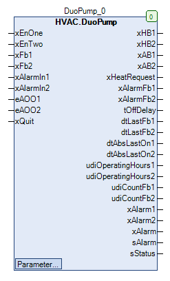

DuoPump (FB)¶
FUNCTION_BLOCK DuoPump
Short Description¶
Redundant control of two similar circulation pumps with blocking protection functionAdditional functions: Request for heat generation, manual override, pump run-on, operating hours counter, operation monitoringTypical application: Redundant control of a double pump in one heating circuit
Portrayal¶

Interfaces¶
Inputs¶
Name Datatype
Range
Init-Value
Function
xEnOne BOOL Requirement of the lead pump
xEnTwo BOOL Requirement of the lead and follower pump
xFb1 BOOL Operating message of the circulation pump 1
xFb2 BOOL Operating message of the circulation pump 2
xAlarmIn1 BOOL failure message of the circulation pump 1
xAlarmIn2 BOOL failure message of the circulation pump 2
eAOO1 HVACTYPES.eManBin HVACTYPES.eManBin.Auto, HVACTYPES.eManBin.ManOff, HVACTYPES.eManBin.ManOn HVACTYPES.eManBin.Auto Operating mode of manual override - Hardware cirulation pump 1
eAOO2 HVACTYPES.eManBin HVACTYPES.eManBin.Auto, HVACTYPES.eManBin.ManOff, HVACTYPES.eManBin.ManOn HVACTYPES.eManBin.Auto Operating mode of manual override - Hardware cirulation pump 2
xQuit BOOL FALSE Resetting the fault message of the operational monitoring
Outputs¶
Name Datatype
Range
Init-Value
Function
xHB1 BOOL Release - cirulation pump 1 after manual override
xHB2 BOOL Release - cirulation pump 2 after manual override
xAB1 BOOL Release - cirulation pump 1 before manual override
xAB2 BOOL Release - cirulation pump 2 before manual override
xHeatRequest BOOL Requirement of heat generation
xAlarmFb1 BOOL Fault message - Operation monitoring - Circulation pump 1
xAlarmFb2 BOOL Fault message - Operation monitoring - Circulation pump 2
tOffDelay TIME Remaining shut-off time of the circulation pump
dtLastFb1 DATE_AND_TIME Date / time of the last operation of the circulation pump 1
dtLastFb2 DATE_AND_TIME Date / time of the last operation of the circulation pump 2
dtAbsLastOn1 DATE_AND_TIME Date / time of the last blocking protection operation of the circulation pump 1
dtAbsLastOn2 DATE_AND_TIME Date / time of the last blocking protection operation of the circulation pump 2
udiOperatingHours1 UDINT Operating hours of the circulation pump 1
udiOperatingHours2 UDINT Operating hours of the circulation pump 2
udiCountFb1 UDINT Number of activations of the circulating pump 1
udiCountFb2 UDINT Number of activations of the circulating pump 2
xAlarm1 BOOL Collective fault - Circulation pump 1
xAlarm2 BOOL Collective fault - Circulation pump 2
xAlarm BOOL Collective fault
sAlarm STRING Message texts for faults
sStatus STRING Message texts for the operating status
Setpoints / Parameters¶
Name Datatype
Range
Init-Value
Function
xAlarmControl BOOL FALSE Option Fault message of the circulation pump acts on the enable before manual override.
udiFbControlTime UDINT 0 bis 300s 60s Duration of operation monitoring
xFbControl BOOL TRUE Release of the operation monitoring
tAbsTime UDINT 0 bis 3600s 120s Duration of blocking protection operation
tAbsStartTime TOD 00:00:00 - 23:59:59 Uhr 08:00:00 Uhr Time point of blocking protection operation
eAbsDay eDoW eDoW.Monday bis eDoW.Sunday eDoW.Monday Weekday of the blocking protection operation
eOffDelayTimeBase eTime eTime.Second, eTime.Minute, eTime.Hour eTime.Second Scaling of the follow-up time ( seconds / minutes / hours )
udiOffDelay UDINT 0 bis 600s 120s Follow-up time of the circulation pumps
eManModeB2 eMANBIN eMANBIN.Auto, eMANBIN.ManOff, eMANBIN.ManOn eMANBIN.Auto Manual override mode for the circulation pump 2
eManModeB1 eMANBIN eMANBIN.Auto, eMANBIN.ManOff, eMANBIN.ManOn eMANBIN.Auto Manual override mode for the circulation pump 1
Functional description¶
General¶
Redundant control¶
Enable - circulation pump 1 before manual override xAB1.¶
Redundant control
xAlarm1 xAlarmControl Follow-up period
blocking protection module
xAB1 Notes
X TRUE TRUE X X FALSE Shutdown enabled via collective fault
FALSE X FALSE FALSE FALSE FALSE Disabling via redundant control
TRUE x FALSe FALSe FALSE TRUE Release via redundant control
X X FALSe TRUE X TRUE Follow-up operation
X x FALSE X TRUE TRUE blocking protection mode
Enable - Circulation pump 2 before manual override xAB2.¶
Redundant control
xAlarm2 xAlarmControl Follow-up period
blocking protection module
xAB2 Notes
X TRUE TRUE X X FALSE Shutdown enabled via collective fault
FALSE X FALSE FALSE FALSE FALSE Disabling via redundant control
TRUE x FALSe FALSe FALSE TRUE Release via redundant control
X X FALSe TRUE X TRUE Follow-up operation
X x FALSE X TRUE TRUE blocking protection mode
enable - circulation pump 1 after manual override xHB1.¶
xAB1 eMANBIN xHB1 Notes
FALSE eMANBIN.Auto FALSE Manual override module in automatic mode
TRUE eMANBIN.Auto TRUE Manual override module in automatic mode
X eMANBIN.ManOn TRUE Manual override module in manual mode On
X eMANBIN.ManOff FALSE Manual override module in manual mode Off
Enable - Circulation pump 2 after manual override xHB2.¶
xAB2 eMANBIN xHB2 Notes
FALSE eMANBIN.Auto FALSE Manual override module in automatic mode
TRUE eMANBIN.Auto TRUE Manual override module in automatic mode
X eMANBIN.ManOn TRUE Manual override module in manual mode On
X eMANBIN.ManOff FALSE Manual override module in manual mode Off
operating messages xFb1 and xFb2¶
Fault messages xAlarmIn1 and xAlarmIn2¶
Resetting the fault signal of the operational monitoring systems xQuit¶
Requirement - heat generation xHeatRequest¶
Follow-up period¶
Blocking protection modules¶
Collective fault - Circulation pump 1 xAlarm1¶
Collective fault - Circulation pump 2 xAlarm2¶
xAlarm collective fault¶
Operating hours counter - circulation pump 1¶
Operating hours counter - circulation pump 2¶
Operation monitoring - Circulation pump 1¶
Operation monitoring - Circulation pump 2¶
Message texts for faults sAlarm¶
Status display sStatus¶
1: ‘Content of sAlarm‘ (sAlarm unequal ‘’)
2: ‘On via manual Hardware’ ( eAOO1 = eAOO2 = HVACTYPES.eManBin.Auto AND eManModeB1 = eManModeB2 = eMANBIN.Auto AND xFb1 and / or *xFb2*= TRUE )
3: ‘Off via manual Hardware’ ( eAOO1 = eAOO2 = HVACTYPES.eManBin.Auto AND eManModeB1 = eManModeB2 = eMANBIN.Auto AND xFb1 and *xFb2*= FALSE )
4: ‘On via manual Hardware’ ( eAOO1 = eAOO2 = HVACTYPES.eManBin.Auto AND eManModeB1 OR eManModeB2 unequal eMANBIN.Auto AND xFb1 and / or *xFb2*= TRUE )
5: ‘Off via manual Hardware’ ( eAOO1 = eAOO2 = HVACTYPES.eManBin.Auto AND eManModeB1 OR eManModeB2 unequal eMANBIN.Auto AND xFb1 and / or *xFb2*= FALSE )
6: ‘On via manual Hardware’ ( eAOO1 or eAOO2 unequal HVACTYPES.eManBin.Auto AND xFb1 and *xFb2*= FALSE )
7: ‘Off via manual Hardware’ ( eAOO1 or eAOO2 unequal HVACTYPES.eManBin.Auto AND xFb1 and *xFb2*= FALSE )
Visualization¶
Information¶
Element Authors
Datum Version Note
Function
Alexander Halter 04.2016 1.0 Initial version
Programming
Adam Bartod, Lukas Pfänder 04.2016 1.0 Initial version
Test Alexander Halter 04.2016 1.0 Initial version
Documentation
Jochen Reu 10.2017 1.0 Initial version
Codesys¶
- InOut:
Scope Name Type Initial Comment Input xEnOne BOOL Requirement of the lead pump
xEnTwo BOOL Requirement of the lead and follower pump
xFb1 BOOL Operating message of the circulation pump 1
xFb2 BOOL Operating message of the circulation pump 2
xAlarmIn1 BOOL failure message of the circulation pump 1
xAlarmIn2 BOOL failure message of the circulation pump 2
eAOO1 eManBin HVACTYPES.eManBin.Auto Operating mode of manual override - Hardware cirulation pump 1
eAOO2 eManBin HVACTYPES.eManBin.Auto Operating mode of manual override - Hardware cirulation pump 2
xQuit BOOL FALSE Resetting the fault message of the operational monitoring
Output xHB1 BOOL Release - cirulation pump 1 after manual override
xHB2 BOOL Release - cirulation pump 2 after manual override
xAB1 BOOL Release - cirulation pump 1 before manual override
xAB2 BOOL Release - cirulation pump 2 before manual override
xHeatRequest BOOL Requirement of heat generation
xAlarmFb1 BOOL Fault message - Operation monitoring - Circulation pump 1
xAlarmFb2 BOOL Fault message - Operation monitoring - Circulation pump 2
tOffDelay TIME Remaining shut-off time of the circulation pump
dtLastFb1 DT Date / time of the last operation of the circulation pump 1
dtLastFb2 DT Date / time of the last operation of the circulation pump 2
dtAbsLastOn1 DT Date / time of the last blocking protection operation of the circulation pump 1
dtAbsLastOn2 DT Date / time of the last blocking protection operation of the circulation pump 2
udiOperatingHours1 UDINT Operating hours of the circulation pump 1
udiOperatingHours2 UDINT Operating hours of the circulation pump 2
udiCountFb1 UDINT Number of activations of the circulating pump 1
udiCountFb2 UDINT Number of activations of the circulating pump 2
xAlarm1 BOOL Collective fault - Circulation pump 1
xAlarm2 BOOL Collective fault - Circulation pump 2
xAlarm BOOL Collective fault
sAlarm STRING Message texts for faults
sStatus STRING Message texts for the operating status
Input xAlarmControl BOOL FALSE Option Fault message of the circulation pump acts on the enable before manual override.
udiFbControlTime UDINT 60 Duration of operation monitoring
xFbControl BOOL TRUE Release of the operation monitoring
tAbsTime UDINT 120 Duration of blocking protection operation
todAbsStartTime TOD TIME_OF_DAY#8:0 Time point of blocking protection operation
eAbsDay eDoW eDow.Monday Weekday of the blocking protection operation
eOffDelayTimeBase eTime eTime.Second Scaling of the follow-up time ( seconds / minutes / hours )
udiOffDelay UDINT 120 Follow-up period of the circulation pump
eManModeB2 eMANBIN eMANBIN.Auto Manual override mode for the circulation pump 2
eManModeB1 eMANBIN eMANBIN.Auto Manual override mode for the circulation pump 1